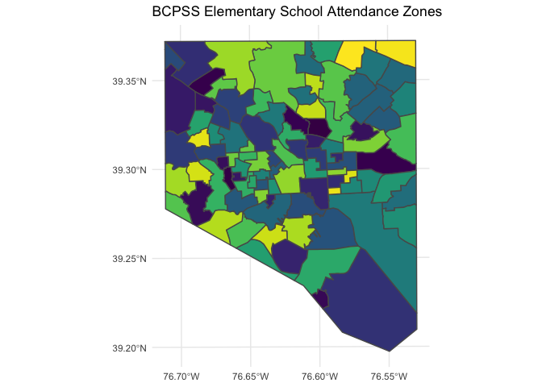
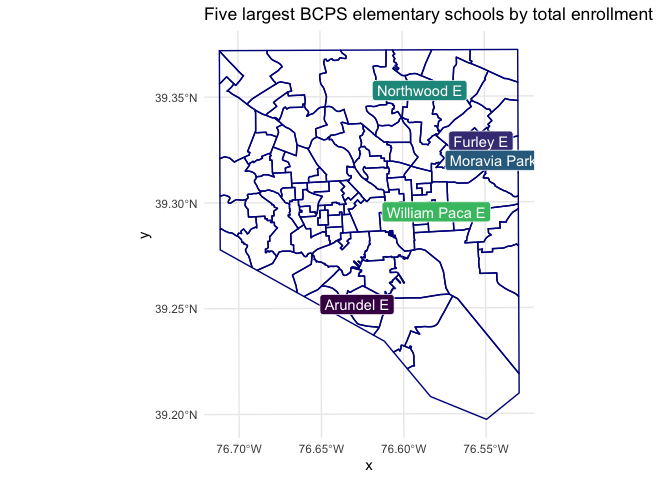

The goal of bcpss is to make data from the Baltimore City Public School system more consistent and accessible to R users. This package may pair well with the mapbaltimore package that offers a broader range of Baltimore-specific datasets and functions for working with that data.
Installation
You can install the development version from GitHub with:
# install.packages("remotes")
remotes::install_github("elipousson/bcpss")Example
Currently, this package includes datasets that include school and grade-level enrollment and demographic data, the published results from a parent survey, and the published results from a combined student and educator survey completed in 2019. This data can be used to answer questions, such as, what are the elementary schools with the greatest total student enrollment?
library(bcpss)
library(dplyr)
#>
#> Attaching package: 'dplyr'
#> The following objects are masked from 'package:stats':
#>
#> filter, lag
#> The following objects are masked from 'package:base':
#>
#> intersect, setdiff, setequal, union
top_5_es <- enrollment_demographics_SY1920 %>%
filter(grade_range == "All Grades",
grade_band == "E") %>%
select(school_number, school_name, total_enrollment) %>%
top_n(5, total_enrollment) %>%
arrange(desc(total_enrollment))
top_5_es %>%
knitr::kable(caption = "Five largest BCPSS elementary schools by total enrollment")| school_number | school_name | total_enrollment |
|---|---|---|
| 105 | Moravia Park Elementary School | 763 |
| 242 | Northwood Elementary School | 590 |
| 164 | Arundel Elementary School | 523 |
| 83 | William Paca Elementary School | 509 |
| 206 | Furley Elementary School | 495 |
Five largest BCPSS elementary schools by total enrollment
Both the enrollment/demographic data and the parent survey are available in both a wide and long format.
The package also includes spatial data for elementary school attendance zones and program locations for the 2020-2021 school year.
library(ggplot2)
bcps_es_zones_SY2021 %>%
ggplot() +
geom_sf(aes(fill = zone_name)) +
scale_fill_viridis_d() +
guides(fill = "none") +
labs(title = "BCPSS Elementary School Attendance Zones") +
theme_minimal()
These two sources can be used in combinations by joining the program_number in the spatial data with the equivalent school_number used in the survey and demographic data.
top_5_es_map <- bcps_programs_SY2021 %>%
left_join(top_5_es, by = c("program_number" = "school_number")) %>%
filter(!is.na(total_enrollment)) %>%
ggplot() +
geom_sf(data = bcps_es_zones_SY2021, fill = NA, color = "darkblue") +
geom_sf(aes(color = school_name)) +
geom_sf_label(aes(label = program_name_short, fill = school_name), color = "white") +
scale_fill_viridis_d(end = 0.7) +
guides(fill = "none", color = "none") +
labs(title = "Five largest BCPSS elementary schools by total enrollment") +
theme_minimal()
top_5_es_map
Related projects
- mapbaltimore
- baltimoredata
- EdSurvey: “EdSurvey is an R statistical package designed for the analysis of national and international education data from the National Center for Education Statistics (NCES).”
- edbuildr: “The goal of edbuildr is to import EdBuild’s master dataset of school district finance, student demographics, and community economic indicators for every school district in the United States.”
- Elementary School Operating Status + NCES 2019-2020 School District Boundaries
- CPSenrollpack: “R package of enrollment data for Chicago Public High Schools, 2006-07 to 2018-19”